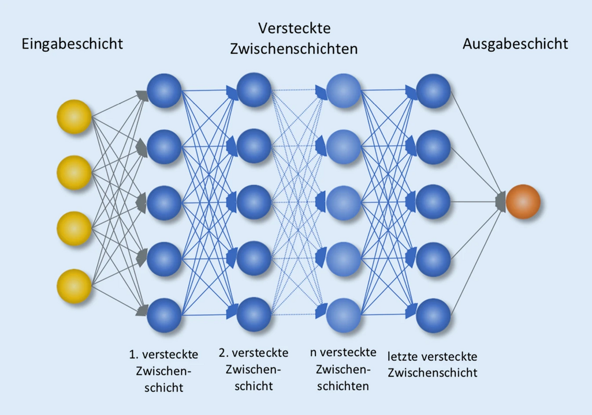
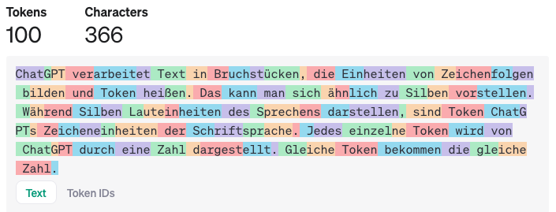
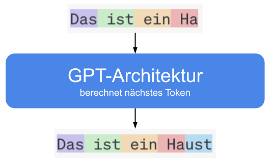
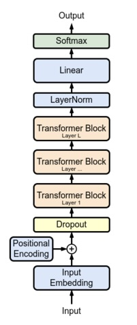
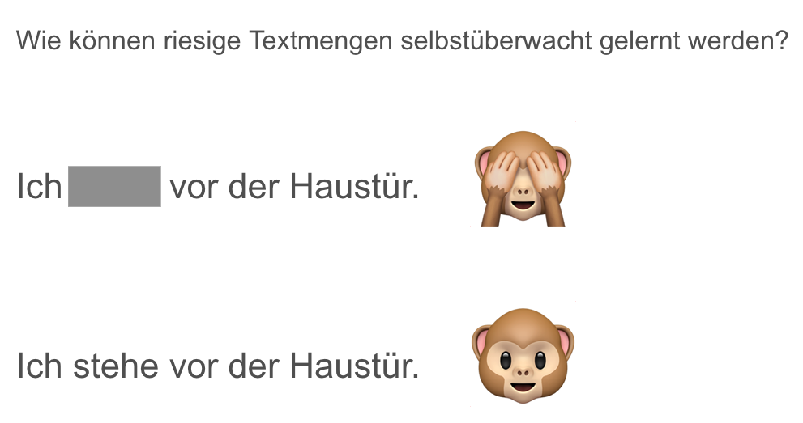
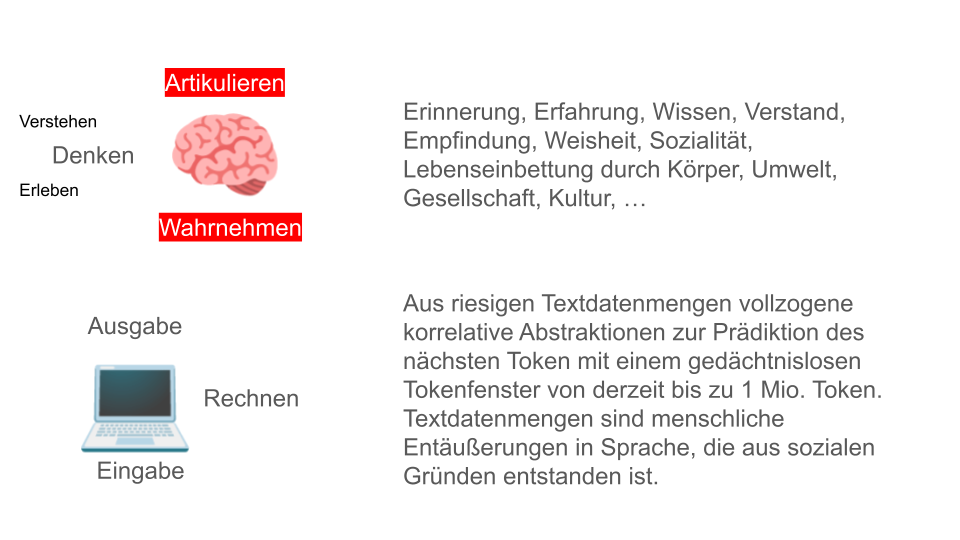
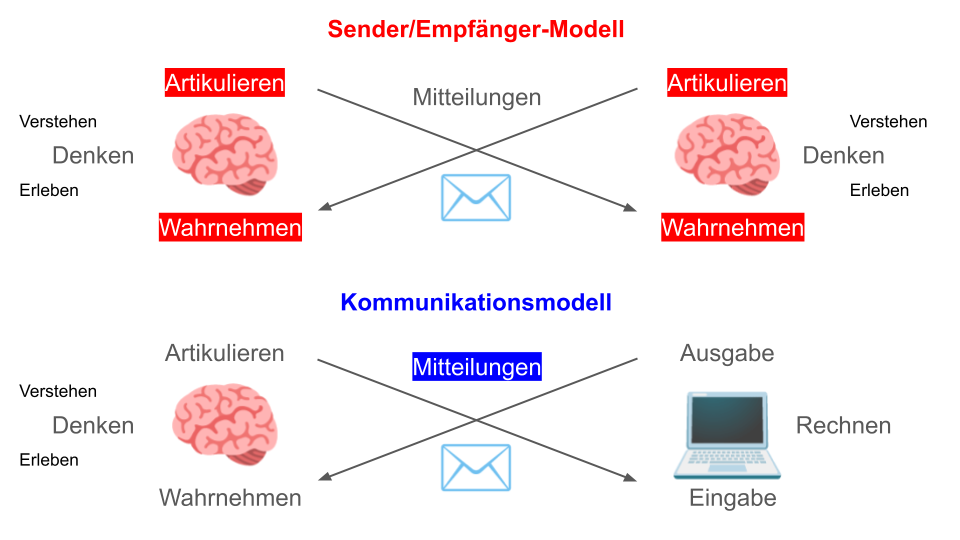
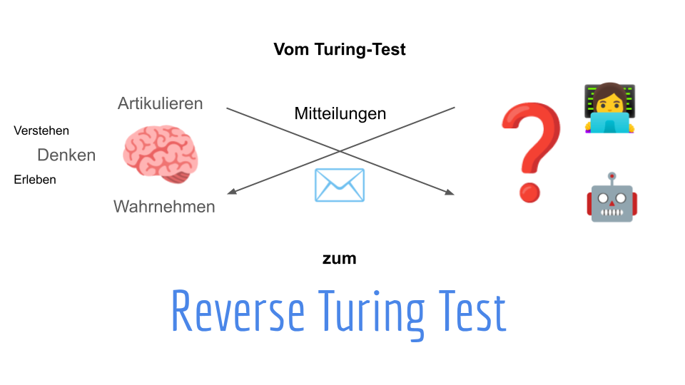
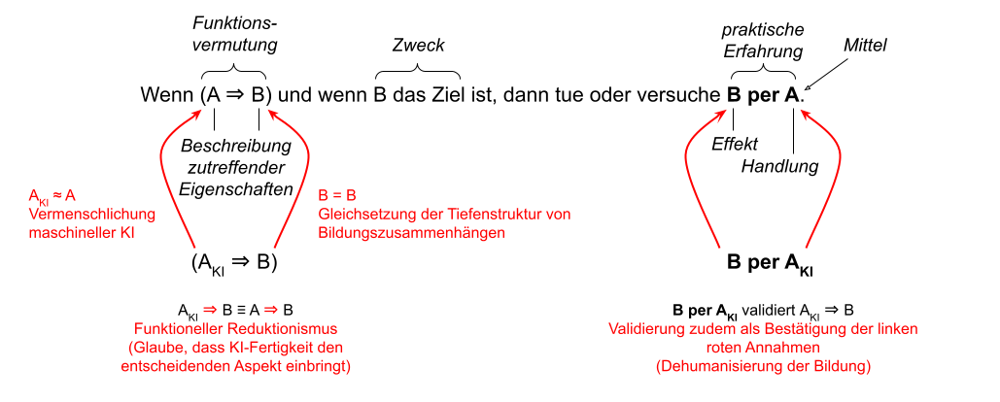

LLMs in der Medizindidaktik
Technische Hochschule Mittelhessen
Fachbereich Mathematik, Naturwissenschaften, Informatik
35390 Gießen, Wiesenstr. 14
Vorstellung
- Elektrotechnik (Dipl.-Ing., RWTH Aachen)
Wirtschaftsingenieur (Dipl. Wirt.-Ing., Fernuni Hagen)
Higher Education (M.A., Universität Hamburg) - Dr.-Ing. in der Informatik (RWTH Aachen, 2003)
Dr. phil. in Bildungswissenschaften (Uni Hamburg, 2023) - 7 Jahre Telekommunikationsindustrie (Ericsson, Aachen)
2003 - 2014 Professur Methoden des Software-Eng., HHN
seit 2014 Professur für Informatik, THM
Wie GPT-Sprachmodelle arbeiten 🩻
GPT = Generative Pre-trained Transformer1
Neuronales Netz
Quelle: Wikimedia
✂️ Textzerlegung in Token
[16047, 38, 2898, 2807, 61008, 295, 2991, 304, 3320, 1412, 267, 92739, 11, 2815, 18560, 90349, 6675, 10120, 29424, 8566, 4469, 293, 52965, 2073, 9857, 65589, 27922, 13, 19537, 16095, 893, 9267, 12999, 25105, 6915, 6529, 8211, 8123, 14230, 59258, 13, 468, 22243, 9484, 8211, 8123, 5034, 1088, 258, 90349, 951, 328, 62331, 729, 15627, 59258, 11, 12868, 9857, 13149, 38, 2898, 82, 10120, 718, 1994, 258, 90349, 2761, 5124, 42480, 52773, 1815, 13, 622, 59626, 95888, 818, 9857, 15165, 6675, 13149, 38, 2898, 20350, 10021, 83845, 294, 33481, 33963, 13, 72497, 12333, 9857, 75775, 2815, 30103, 12333, 83845, 13]- Chat als 16047, G als 38, PT als 2898, …, Token als 9857, …
- Token bilden das Vokabular von ChatGPT
- In einer Eingabe hat jedes Token eine Position
Wie ein Prompt verarbeitet wird
Prompt ist eine Folge von Token. Es wird die Wahrscheinlichkeit des nächsten Tokens berechnet. Die “Temperatur” beeinflusst die Wahl des Tokens.
Von Tokenfolge zum Input Embed
- Token Embedding (Matrix, im Training gelernt)
⏵ hält zu jedem Token einen Vektor aus Kommazahlen vor
⏵ Vektor kodiert Bedeutungsbezüge von Token - Position Embedding (Matrix, über Formel oder erlernt)
⏵ hält zu jeder Position einen Vektor aus Kommazahlen vor
⏵ Vektor kodiert Position und positionale Eigenschaften - Input Embed/ding (Matrix)
⏵ verrechnet jeweils Vektor\(_{TE}\) + Vektor\(_{PE}\) einer Tokenfolge
⏵ stellt die Vektoren zu Matrix zusammen \(\rightarrow\) Input Embed
⏵ Das Input Embed läuft durch das trainierte Sprachmodell
Transformer (trainiert)

- Nimmt Input Embed entgegen
- Hat mehrere Einheiten zur “Aufmerksamkeitsverarbeitung”
- Analysiert Bedeutungs- und Positionsbezüge unter den Token der Tokenfolge
- Liefert verbessertes Input Embed zurück
Embed durchläuft weitere Transformer
Wie lernt ein LLM Sprache?
Abbildung: Lernen durch Korrelation und Prädiktion
Abstraktionen in Transformer-Folge
Lower Level Features und Muster
Syntax, Grammatik, Wort-AssoziationenHigher Level Abstraktionen und Beziehungen
kontextabhängige Bedeutungen, Komplexe semantische Bezüge, Diskursstrukturen
Was genau in den Transformerschichten passiert, versteht und weiß niemand.
Sind LLMs N-Gramme on steroids?
- Logisches Denken? Bsp.: Alice hat vier Schwestern und drei Brüder. Wieviele Schwestern hat ein Bruder von Alice?
- Mathematisches Begründen? Replikation von Begründungen aus Trainingsdaten
- Nachdenken und originär neue Ideen entwickeln? Allerdings kommt man ohne Nachdenken weit, Bsp. Schach-GPT
- Systematisches Vorgehen? Bsp. schriftliches Rechnen
- Mehr können, als sie gelernt haben? Sprachmodelle wachsen nicht über sich hinaus
Die Entwicklung der GPT-Varianten
| Jahr | Modell | Layer | Parameter | Token-Kontext |
|---|---|---|---|---|
| 6/2018 | GPT-1 | 12 | 110 Mill. | |
| 2/2019 | GPT-2 | 48 | 1.5 Mrd. | |
| 6/2020 | GPT-3 | 96 | 175 Mrd. | 2048 |
| 3/2022 | GPT-3.5 | |||
| 3/2023 | GPT-4 | \(\ge\) 120 | ~1 Bill. | 8192, 32768 |
Das Training von GPT-4 soll 100 Mill. USD gekostet haben.
Das Gehirn: 1,5 kg, ~90 Milliarden Nervenzellen, mit einer Schaltzeit von ca. 1 ms pro Neuron, 20 Watt
Sprachmodelle “halluzinieren”:
Kein Bug, sondern funktionsbedingt
Weg mag, Podcast-Episode in Herzbergs Hörsaal anhören 👂
Dialog mit ChatGPT 3 (ein Auszug, scrollen ⬇️)
Können Sie mir bitte die Tasse Kaffee zusammen mit dem Kaffee einpacken?
Leider kann ich als Text-Modell keine physischen Gegenstände einpacken oder versenden. Wenn Sie nach Anweisungen zum Kaffee-Einpacken suchen oder wenn es um eine metaphorische oder sprachliche Anfrage geht, lassen Sie es mich bitte wissen, und ich werde mein Bestes tun, um Ihnen zu helfen!
Schreib mir dazu eine Bedienungsanleitung.
Titel: Bedienungsanleitung zum Einpacken einer Tasse Kaffee
Schritt 1: Materialien vorbereiten
Stellen Sie sicher, dass Sie über die folgenden Materialien verfügen:
- Eine Tasse Kaffee
- Ein geeignetes Verpackungsmaterial (z. B. Geschenkpapier, Luftpolsterfolie, oder eine Kaffeebecherverpackung)
- Transparenter Klebeband oder Geschenkband
- Optional: Grußkarte oder Etikett
Schritt 2: Vorbereitung der Tasse
- Trinken Sie etwa die Hälfte des Kaffees, um sicherzustellen, dass die Tasse nicht überläuft.
- Wischen Sie die Außenseite der Tasse mit einem sauberen Tuch ab, um mögliche Flecken zu entfernen.
Schritt 3: Verpackung der Tasse
Platzieren Sie die Tasse in die Mitte des Verpackungsmaterials. Stellen Sie sicher, dass genügend Material vorhanden ist, um die Tasse vollständig abzudecken.
Falten Sie das Verpackungsmaterial über die Tasse, beginnend mit einer Seite. Sichern Sie es mit Klebeband, um es zu fixieren.
Wiederholen Sie den Vorgang mit der gegenüberliegenden Seite des Verpackungsmaterials, um die Tasse vollständig zu umhüllen.
Schritt 4: Zusätzliche Sicherung (optional)
Falls gewünscht, können Sie das Paket mit Geschenkband oder einer anderen dekorativen Verzierung verschönern.
Wenn Sie eine Grußkarte oder ein Etikett verwenden möchten, befestigen Sie es sicher am Paket.
Schritt 5: Abschluss
Ihre Tasse Kaffee ist jetzt sicher verpackt und bereit zum Verschenken oder Transportieren. Achten Sie darauf, dass die Verpackung sicher und stabil ist, um mögliche Beschädigungen zu vermeiden.
[…]
Wie verhindert man, dass der Kaffee nach zwei Wochen Versandzeit nicht zu heiß ist?
Wenn Sie sicherstellen möchten, dass der Kaffee nach zwei Wochen Versandzeit nicht zu heiß ist, gibt es einige Überlegungen und Maßnahmen, die Sie ergreifen können:
1. Verwenden Sie isolierende Verpackung:
Verwenden Sie eine isolierende Verpackung, die die Temperatur des Kaffees besser stabilisiert. Dazu können Thermoboxen, Isolierbecher oder spezielle Verpackungsmaterialien mit isolierenden Eigenschaften gehören.
2. Fügen Sie Kühlpacks hinzu
Platzieren Sie kühlende Elemente, wie Kühlpacks, in der Verpackung. Dies hilft, die Temperatur des Kaffees zu regulieren und zu verhindern, dass er übermäßig heiß wird.
3. Wählen Sie geeignete Versanddienste:
Entscheiden Sie sich für Versanddienste, die spezielle Optionen für den Versand von Lebensmitteln oder temperaturempfindlichen Gütern anbieten. Informieren Sie den Versanddienst über den Inhalt des Pakets.
4. Verringern Sie die Anfangstemperatur:
Lassen Sie den Kaffee vor dem Versand etwas abkühlen, um sicherzustellen, dass er nicht zu heiß ist, wenn er ankommt. Dies könnte bedeuten, den Kaffee vor dem Verpacken abkühlen zu lassen.
5. Wählen Sie spezielle Kaffeebehälter:
Verwenden Sie spezielle Kaffeebehälter mit doppelten Wänden oder Isolierfunktionen, um die Temperatur besser zu halten.
6. Informieren Sie den Empfänger:
Geben Sie dem Empfänger Anweisungen, den Kaffee vor dem Verzehr möglicherweise kurz stehen zu lassen, um sicherzustellen, dass er angenehm temperiert ist.
Es ist wichtig zu beachten, dass die Effektivität dieser Maßnahmen von Faktoren wie der Versandzeit, den klimatischen Bedingungen und der gewählten Verpackung abhängt. Daher kann es hilfreich sein, sich über die spezifischen Anforderungen des Versands zu informieren und geeignete Vorkehrungen zu treffen.
Neulich ist es mir im Sommer passiert, dass der Kaffee auf minus 100 Grad eingefroren ist. Der Empfänger war verärgert.
Es tut mir leid zu hören, dass es zu diesem unangenehmen Vorfall gekommen ist. Kaffee einfrieren kann zu unerwünschten Effekten führen, insbesondere wenn extreme Temperaturen wie minus 100 Grad Celsius erreicht werden. Hier sind einige Überlegungen, um solche Vorfälle in Zukunft zu vermeiden:
1. Geeignete Verpackung wählen:
Achten Sie darauf, dass Sie eine Verpackung verwenden, die den Inhalt vor extremen Temperaturen schützt. Isolierte Verpackungsmaterialien oder spezielle Gefrierbeutel können helfen, extreme Kälte zu verhindern.
2. Informieren Sie den Versanddienst:
Wenn Sie Lebensmittel oder Getränke verschicken, informieren Sie den Versanddienst über den Inhalt des Pakets. Einige Dienste bieten spezielle Optionen für den Versand temperaturempfindlicher Güter an.
3. Versandtermine beachten:
Versuchen Sie, den Versandtermin so zu wählen, dass extreme Wetterbedingungen vermieden werden. In besonders heißen oder kalten Perioden kann der Versand von temperaturempfindlichen Produkten risikoreicher sein.
4. Kontakt mit dem Versanddienst aufnehmen:
Nehmen Sie Kontakt mit dem Versanddienst auf, um sicherzustellen, dass sie sich der besonderen Anforderungen bewusst sind und angemessene Maßnahmen ergreifen, um extreme Bedingungen zu vermeiden.
5. Hinweise für den Empfänger bereitstellen:
Fügen Sie klare Anweisungen für den Empfänger hinzu, wie er mit dem Paket umgehen soll, insbesondere wenn es um temperaturempfindliche Inhalte wie Kaffee geht.
Es ist wichtig, die speziellen Anforderungen von Lebensmitteln und Getränken während des Versands zu berücksichtigen, um sicherzustellen, dass sie in einem optimalen Zustand beim Empfänger ankommen.
Anforderungen an Nutzer*innen
Treffen, Aktivieren, Auffinden von Frames
- Sprachliche Ausdruckfähigkeit (Sprachbeherrschung)
- Grundwissen, thematisches Wissen (Fach- und Allgemeinbildung), Framing
Qualitätssicherung
- Sozial- und Wirklichkeitskompetenz, ges. Menschenverstand
- Intuition, Allgemeinverstand, Recherche, Überprüfung
Taschenrechner-Analogie: Rechenverständnis erforderlich
Drei Einwürfe 🧐
- Sprache findet in Lebensvollzügen statt
- Intelligenz vs. Fähigkeit zur Kommunikation
- KI macht Bildung zum Technikproblem
Die damit verbundenen Problemfelder stelle ich gesondert vor
1. Sprache in Lebensvollzügen
Abbildung: Generative KI basiert auf Prädiktion, nicht Denken
1. Modell: Sprache ist nicht alles

Abbildung: Sprache in Vollzugssystemen
2. Intelligenz und Kommunikation
“Die Fähigkeit zu denken, die wir mit Intelligenz assoziieren, kann von der Fähigkeit, an Kommunikation teilzunehmen, getrennt werden.”
– Elena Esposito (2024, S. 24)
2. Sender/Empfänger oder Mitteilung
Abbildung: Geht es um Intelligenz oder Kommunikation?
2. Das I der KI ist Dein I
Abbildung: Geht es beim Turing-Test wirklich um Intelligenz?
3. Bildung als Technikproblem (Teil 1)
In den Technikwissenschaften geht es nicht um Wahrheit, sondern um Effektivität. Das Bild zeigt die einfachste handlungstheoretische Denkfigur (einen praktischen Syllogismus), die Wissen und Handlung in einen Bezug stellt und damit kategorial verschiedene Dimensionen verknüpft, siehe auch Herzberg (2023).
3. Bildung als Technikproblem (Teil 2)
Der Einsatz von KI bringt implizite Annahmen mit sich.
Problemfelder 🩺
“Houston, wir haben ein Problem” – Apollo 13 (Film)
Problemfeld Deskilling1
🪚 + 🔧 vs. 🪚 + ❓
Wir wissen nicht, was wir verlieren2
Problemfeld Asozialität
🤼 vs. 🧑💻 🤖 🙍
Wie generative KI das Soziale erodiert1
Problemfeld Datafizierung
🌳 vs. [63973, 2478]
Vom Wert in der Welt zu sein1
Problemfeld Verständnisverlust
🧠 📚 vs. 🧩 ☘️
Der Zweck heiligt die Mittel1
Problemfeld Entgeisterung
🤰 🧘 ⚰️ vs. 🖱️ 🖥️ ⌨️
Im Leben stehen, Dabeisein und Endlichsein1
Problemfeld Wertverschiebung
⚖️ 🎖 vs. 💶 🛎️
Datenschutz, Recht, Moral und Ethik,
Anstand, Gesetz, Erziehung, Bildung …1
Was Sprachmodellen bleibt
- “Beherrschen” sprachlich, narrative Logiken
- “Verstehen” das Soziale in Sprache
- Übertreffen menschliches Sprachwissen
- Haben so ziemlich alles schon einmal “gehört”
- Kennen zahllose sprachliche Muster & Frames
Rückbesinnung: Didaktik 🚑
Didaktik1
- Wissenschaft und Praxis des Lehrens und Lernens
- Hochschuldidaktik: Lehr-Lernziele, Inhalte, Methoden, Prüfungen etc. in Studium und Lehre im Hochschulkontext
- Wissenschaftsdidaktik: fokussiert auf Vermittlung eines Weltaufschlusses, der in Wissenschaft angelegt ist
- Kurz: “Lehrhandeln von forschenden Wissenschaftlerinnen”
- Schuldidaktik: entsprechend inkl. Pädagogik
Problem: Bildung und das Leben
Drei Einwürfe
Sprache in Lebensvollzügen, Intelligenz und Kommunikation, KI macht Bildung zum Technikproblem
Mehrere Problemfelder
Deskilling, Asozialität, Datafizierung, Verständnisverlust, Entgeisterung, Wertverschiebung
Dazu kommt: Die ärztliche Verantwortung
Rückbesinnung
- Didaktik ist keine Technikwissenschaft
- Setzung: Menschenbild, Werte, Normen
- KI von der Didaktik her denken und begründen
- Forderung: Bildungsfolgenforschung
Ist der Einsatz von KI wissenschaftlich vertretbar?
Zeit für praktische Übungen
Quellen
(ggfs. scrollen)

Medizindidaktik für Habilitierende, Uni Marburg, 27. Nov. 2024